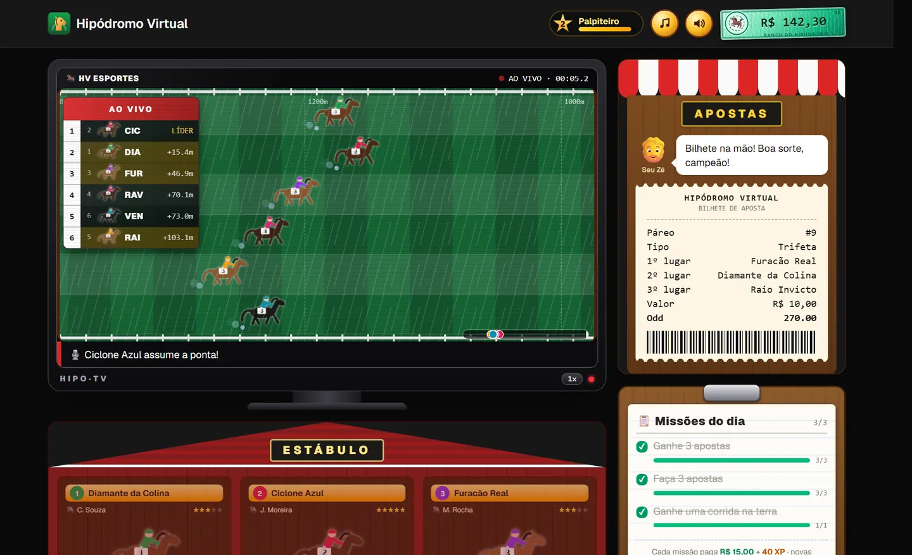
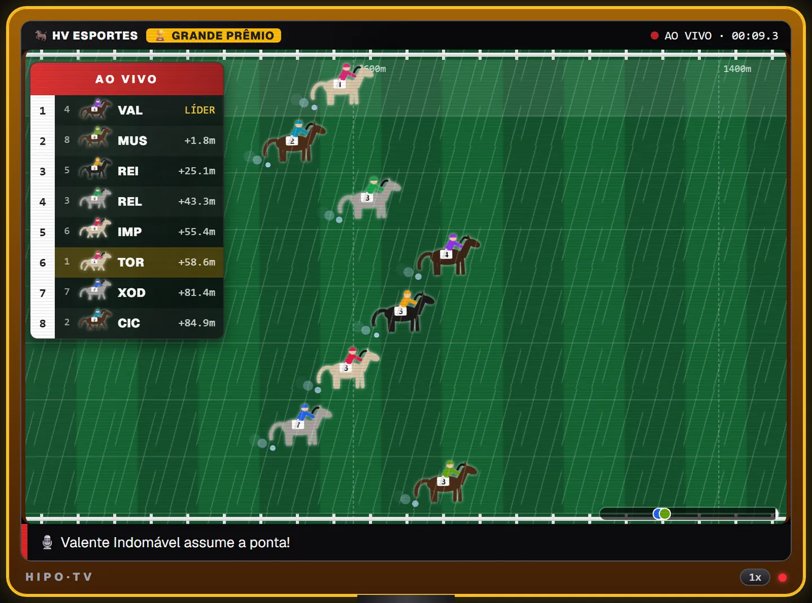
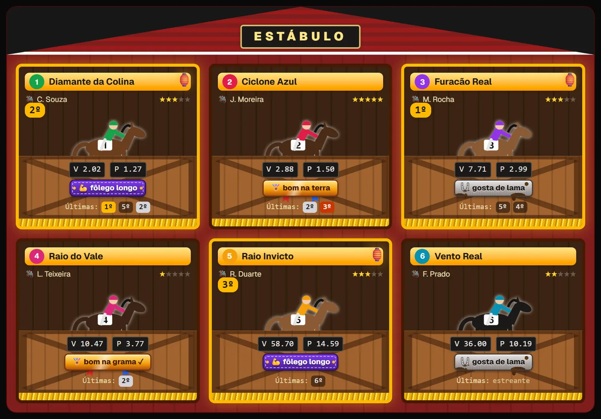
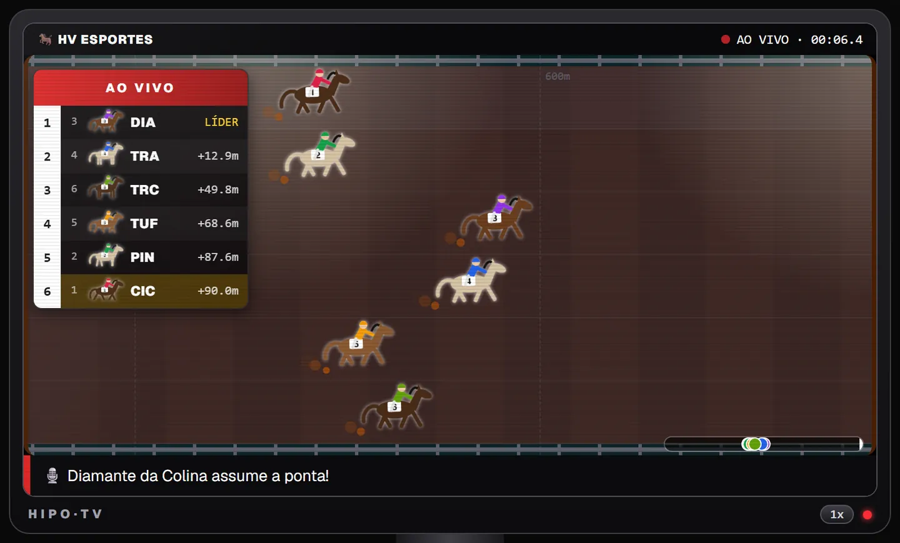
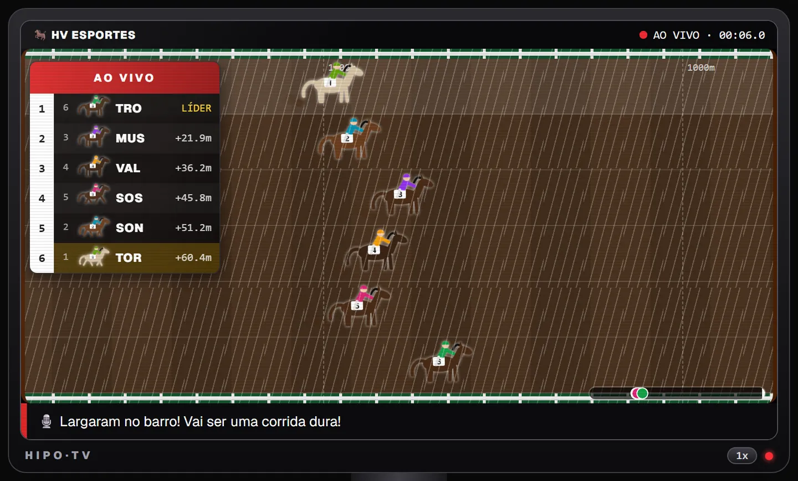

Hipódromo Virtual
Simulador de apostas em corridas de cavalos: a corrida passa ao vivo numa TV, com estábulo, guichê de apostas, odds por Monte Carlo, missões e troféus. Dinheiro só de mentira.A horse racing betting simulator: races play live on a TV, with a stable, a betting booth, Monte Carlo odds, missions and trophies. Play money only.


 0
0

O que fazWhat it does
- Corrida ao vivo numa TV, com câmera que acompanha o líder, minimapa, narração na tarja e classificação estilo F1 sobre a imagem.
- Live race on a TV, with a camera that follows the leader, a minimap, a narration ticker and an F1-style standings tower over the picture.
- Odds honestas: cada páreo é simulado 3.000 vezes (Monte Carlo) antes de abrir, com 10% de margem da casa.
- Honest odds: every race is simulated 3,000 times (Monte Carlo) before it opens, with a 10% house margin.
- Cinco tipos de aposta: Vencedor, Placê, Dupla, Exata e Trifeta, num guichê com o Seu Zé, fichas de cassino e bilhete impresso com carimbo.
- Five bet types: Win, Place, Quinella, Exacta and Trifecta, at a booth with Seu Zé, casino chips and a printed ticket that gets stamped.
- Elenco fixo de 30 cavalos com ficha dos últimos resultados e uma característica (gosta de lama, bom numa superfície, fôlego longo), e 8 jóqueis com estrelas de habilidade.
- A fixed roster of 30 horses with their recent form and a trait (loves mud, good on a surface, long stamina), plus 8 jockeys with skill stars.
- Pistas variadas: grama, areia e terra; seca, molhada ou pesada; 800 a 1600 m; e corridas noturnas sob holofotes.
- Varied tracks: turf, sand and dirt; dry, wet or heavy; 800 to 1600 m; and night races under floodlights.
- Grande Prêmio a cada 10 páreos: 2400 m, 8 cavalos, odds sem margem e XP em dobro.
- A Grand Prix every 10 races: 2400 m, 8 horses, no-margin odds and double XP.
- Missões diárias, 14 troféus, níveis com XP, bônus diário e histórico num quadro-negro.
- Daily missions, 14 trophies, XP levels, a daily bonus and history on a chalkboard.
- Áudio 100% sintetizado, sem arquivos: trilha sonora, cascos, sino de largada, torcida e narração falada em português.
- Fully synthesized audio, no files: soundtrack, hooves, the starting bell, the crowd and spoken narration in Portuguese.
Como funcionaHow it works
O servidor em Go decide tudo: simula a corrida, calcula as odds e guarda apostas, conquistas, níveis e o salvamento. O front em React (Vite, Tailwind e shadcn/ui) só reproduz os quadros que recebe, então não dá pra trapacear pelo console. O Go serve o front já compilado.The Go server decides everything: it simulates the race, computes the odds and keeps the bets, achievements, levels and the save. The React front end (Vite, Tailwind and shadcn/ui) only plays back the frames it gets, so you can't cheat from the console. Go serves the built front end.
Como rodarRun it
# Go 1.27+ e Node.js 22+ cd frontend npm install npm run build cd ../backend go run . # http://localhost:8080
ImagensImages



